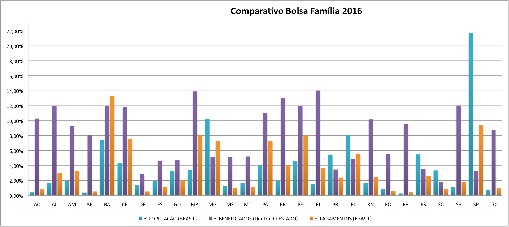
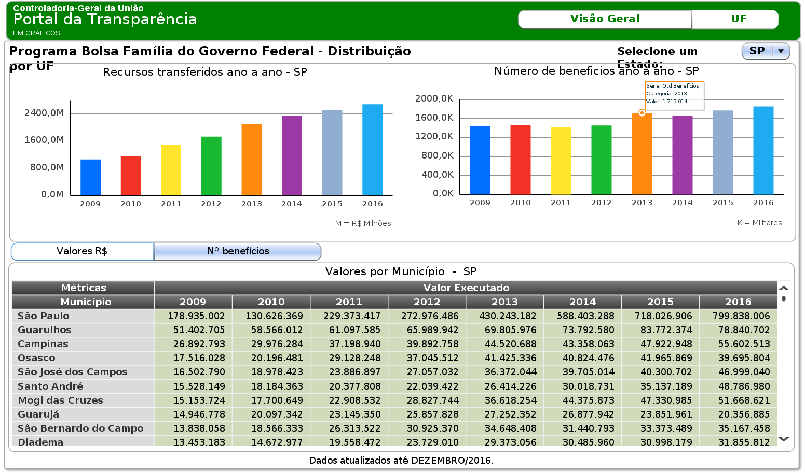

<div id="intro">
		<div class="container">
			<div class="row">
				<div class="col-md-8 col-md-offset-2 text-center">
					<h1>VISUALIZAÇÃO DE DADOS DO PROGRAMA BOLSA FAMÍLIA</h1>
				</div>
			</div>
			<br><br><br><br>
			<div class="row">
			<div class="col-md-8 col-md-offset-2 mx-auto text-center">
					
					<p>Esta página é parte de um projeto desenvolvido na disciplina de pós-graduação IA369 – Tópicos em Engenharia de Computação VI 
					sobre o tema Visualização de Dados, ministrada pela  Professora Paula Dornhofer Paro Costa, no primeiro semestre de 2017, 
					oferecida pela Faculdade de Engenharia Elétrica e de Computação (FEEC) da Universidade Estadual de Campinas (UNICAMP). 
					Seus idealizadores são os alunos Adriano Orsoni Diniz, Diego Cardoso Alves e Euline Marcos Rodrigues.</p>
					<p>
					Devido a enorme quantidade de dados presente no mundo moderno, sistemas e ferramentas que permitam cada vez a interação 
					com estes dados são necessárias. Conforme a própria descrição da disciplina diz, sistemas de visualização devidamente 
					projetados podem oferecer atalhos cognitivos e promover inferências perceptivas que potencializem a compreensão, a memória 
					e facilitem tomadas de decisão, possibilitando também o envolvimento de públicos diversos no processo de análise de dados.</p>
					<p>
					A disciplina apresentou os conceitos sobre a teoria de visualização fornecendo possíveis abordagens já estudadas por outros 
					para analisar os mais diversos tipos de dados disponíveis no mundo atual (texto, imagens, mapas, redes, sensores). Partindo 
					das três questões básicas propostas por Munzner (Visualization Analysis and Desing, 2004), desenvolvemos este projeto. As perguntas são:
					</p>
					<br><br>
					<div class="col-md-6 col-md-offset-3 text-center">
						<p>1.	What? O que vemos nos dados?</p>
						<p>2.	Why? Por que queremos visualizar estes dados?</p>
						<p>3.	How? Como vamos construir nossa visualização?</p>
					</div>
					<br><br><br><br><br><br>
					<p>
					Com isto em mente, procuramos escolher dentre as milhares de possibilidades de dados disponíveis e chegamos ao Portal da Transparência 
					do Governo Federal. O Portal da Transparência disponibiliza dados de receitas e despesas de todos os ministérios e outros órgãos do Poder 
					Executivo Federal, por serem eles os executores dos programas de governo e os responsáveis pela gestão das ações governamentais.
					</p>
					<p>
					Decidimos escolher os dados do programa Bolsa Família, que é um programa social que procura garantir às famílias o direito à alimentação 
					e o acesso à educação e à saúde. A população alvo do programa é constituída por famílias em situação de pobreza ou extrema pobreza.
					</p>
					<br><br>
					<p></p>
					<br><br>
					<p>
					Em uma parte do site é possível baixar os dados de receitas, gastos diretos, transferências, programas sociais, convênios em 
					um formato CSV (Comma-Separated Values - arquivos de texto cujos valores são separados por vírgulas). 
					<p>
					<p>
					O site possui dados do programa desde 2004, sendo que a partir de 2011 os dados passaram a ser divulgados mensalmente. 
					Para o projeto, decidimos focar nos dados entre os anos de 2011 até 2016, pois poderíamos fazer uma analise mensal e 
					também comparativa entre anos inteiros. No site já há dados de 2017, mas por se tratar do ano corrente, sem todos os dados 
					ainda, não o consideramos.
					</p>
					<p>
					As informações que decidimos escolher dos dados foram:
					</p>
					<br>
					<p>•	Estado (UF – Unidade da Federação)</p>
					<p>•	Município</p>
					<p>•	Beneficiado (Identificação e nome da pessoa que recebeu recurso do programa) – vale ressaltar aqui, que devido a 
					limitação de tempo para o projeto e também por questões legais, decidimos não divulgar tais nomes</p>
					<p>•	Valor da Parcela recebida pelo beneficiado</p>
					<p>•	Ano e Mês do pagamento realizado</p>
					<br>
					
					<p>
					Com estes dados, podemos por exemplo analisar os números de 2016, pensando em cada estado, quanto a população daquele 
					estado representa no Brasil, quanto da população do estado está cadastrada no programa e quanto em relação aos recursos 
					aquele estado recebeu. Isto daria uma análise semelhante ao gráfico abaixo:
					</p>
					<br><br>
					<p></p>
					<br><br>
					<p>
					Usando técnicas cobertas na disciplina e ferramentas indicadas também na disciplina, procuramos aplicá-las em nosso projeto nas seguintes fases:
					</p>
					<br>
					<p>•	Seleção dos dados: os dados são escolhidos. Aqui a visualização é importante para delimitar o domínio dos dados;</p>
					<p>•	Pré-processamento e limpeza: visa garantir a qualidade dos dados e permitir que os algoritmos e scripts sejam executáveis;</p>
					<p>•	Transformação: os dados são armazenados de tal forma que garantam que os algoritmos e scripts possam ser aplicados com eficiência;</p>
					<p>•	Data Mining: consiste na exploração e análise dos dados para descobrir os padrões ou regras dos mesmos;</p>
					<p>•	Interpretação e Avaliação: aqui (objetivo deste projeto) espera-se que os usuários adquiram conhecimento ou ampliem-no.</p>
					<br>
					
					<p>
					Como os dados escolhidos contemplam series históricas, nossa análise exploratória procurou descobrir fatos novos 
					que pudessem ser correlacionados com outros indicadores presentes na população brasileira.
					</p>
					<p>
					Numa parte do site do Governo é possível visualizar alguns gráficos pré-estabelecidos sobre Bolsa Família. 
					</p>
					<br><br>
					<p></p>
					<br><br>
					<p>
					Como uma parte interessante da disciplina foi a visualização interativa dos dados, decidimos optar por criar um 
					painel onde o próprio usuário da página pudesse criar visões diferentes dos dados e agrupá-las nas dimensões estado, município, ano e/ou mês. 
					</p>
					<p>
					Também decidimos possibilitar que os dados pudessem ser vistos num mapa do Brasil onde o usuário ao escolher um estado ou cidade tivesse um 
					sumário ou mais detalhes sobre o local escolhido.
					</p>
					<p>
					Nossa intenção (ainda não final) é que a página permita que qualquer pessoa consiga visualizar os dados deste programa de forma interativa 
					e mais cognitiva para tirar suas próprias conclusões. 
					</p>
					<p>
					Como os dados são do Governo Brasileiro, a inclusão de novos indicadores no painel poderá ajudar os gestores e definidores de políticas 
					publicas nas decisões de como aplicar e desenvolver estas políticas para que mais pessoas sejam beneficiadas, não só em programas de 
					erradicação da pobreza, mas também em áreas de educação, saúde e segurança dentre outras.
					</p>
					<br>
					<p>
					Boas descobertas!!!
					</p>
					<br>
					<p>
					Criticas e sugestões, enviem email para:
					</p>
					<p>•	Adriano Orsoni Diniz (a179532@g.unicamp.br)</p>
					<p>•	Diego Cardoso Alves (d189729@g.unicamp.br)</p>
					<p>•	Euline Marcos Rodrigues (e850318@g.unicamp.br)</p>
			</div>
			</div>
		</div><!--/.container -->
</div><!--/ #intro -->